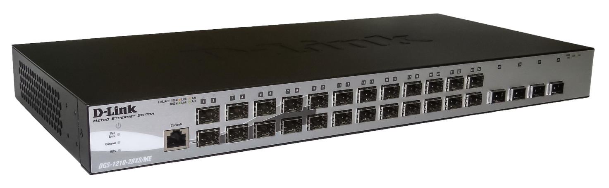
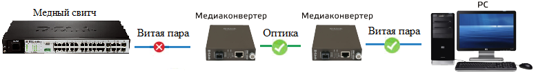

FTTH (fiber to the home) — оптическое волокно до жилища. В жилище устанавливается терминал, а от терминала кабель до компьютера. Данное определение исключает те архитектуры сети, в которых оптическое волокно заканчивается до достижения жилых помещений или офисного пространства и линия продолжается иной физической средой, нежели оптической.
Схема подключения
Оптический коммутатор за частую имеет 24 слота для установки SFP модулей со скоростью 100Мбит/с и 4 комбинированных порта (10/100/1000Base-T или 100Мбит/с и 1000Мбит/с SFP).

FOB пластиковый абонентский настенный оптический мини-бокс, FOB предназначен для использования в жилых и офисных помещениях, который позволяет обрабатывать оптические волокона.
SFP промышленный стандарт модульных компактных приёмопередатчиков (трансиверов), используемых для передачи и приема данных, используются для присоединения платы сетевого устройства (коммутатора, маршрутизатора или подобного устройства) к оптическому волокну.

Медиаконвертер устройство, преобразующее среду распространения сигнала из одного типа в другой. Чаще всего средой распространения сигнала являются медные провода и оптические кабели. Под средой распространения сигнала может пониматься любая среда передачи данных, однако в современной терминологии медиаконвертер работает как связующее звено только между двумя средами — оптическим и медным кабелями.
Fiber предлагает ряд преимуществ по сравнению с предыдущими технологиями (медь). Наиболее важными из них являются следующие:
1. Огромная пропускная способность.
2. Легко обновляемый.
3. Простота установки.
4. Снижает затраты на эксплуатацию и техническое обслуживание.
5. Охватывает очень большие расстояния.
6. Невосприимчивость к электромагнитным помехам (EMI).
Есть подключения абонента по оптике с помощью 2-х медиаконвертеров.
Имеется оптическая линия связи из двух медиаконвертеров один из них "MК. 1" подключен к «медному» управляемому коммутатору второй "МК. 2" подключен к PC абонента. Медиаконвертеры соединены оптоволокном.
| Варианты отказов оборудования линии связи | Описание | Индикация на коммутаторе | Индикация на медиаконвертерах | |
| Схема подключения | СВ. | MК. 1 | MК. 2 | |
| Нормальное рабочее состояние | ||||
|  | Обрыв медного патчкорда со стороны провайдера | |||
| Отсутствие питания на МК со стороны провайдера |  |
|||
| Обрыв оптоволокна | |
|
||
| Отсутствие питания на МК со стороны абонента | |
|||
| Обрыв медного патчкорда со стороны абонента | ||||